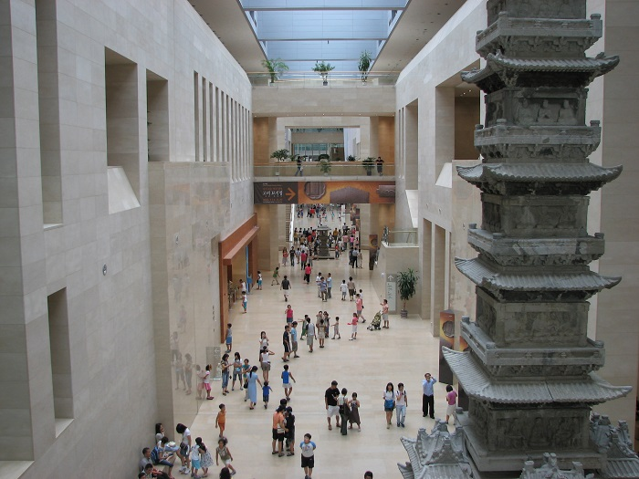

Du lịch Hàn Quốc
Welcome to Korea
Welcome to Korea
Được thành lập từ năm 1945, Bảo tàng Quốc gia Hàn Quốc là một trong những bảo tàng lớn nhất, nơi lưu giữ nhiều tư liệu, hiện vật quý giá liên quan đến lịch sử, văn hóa, nghệ thuật. Hằng năm, bảo tàng này đón hơn 3 triệu lượt khách tham quan và trở thành một trong những bảo tàng được yêu thích nhất thế giới, bảo tàng được yêu thích thứ 3 ở châu Á.

Tham quan bảo tàng Quốc gia Hàn Quốc luôn là một trong những trải nghiệm không thể bỏ qua khi du lịch Seoul. Tới đây, bạn sẽ được tìm hiểu rất nhiều điều thú vị về lịch sử, văn hóa, nghệ thuật của Hàn Quốc trong suốt chiều dài lịch sử hàng nghìn năm. Vậy bảo tàng này nằm ở đâu? Làm thế nào để di chuyển đến đây?… Ngay bây giờ chúng ta sẽ cùng nhau khám phá nhé.
Bảo tàng quốc gia Hàn Quốc là một bảo tàng vô cùng nổi tiếng tại xứ sở Kim Chi. Bảo tàng này nằm ở một vị trí trung tâm của thủ đô Seoul, cách ga Yongsan khoảng 1,5 km. Bảo tàng có địa chỉ tại số 137, đường Seobinggo-ro, Yongsan-gu, Seoul.
Bảo tàng được thành lập từ năm 1945. Tuy nhiên, đến năm 2005 nó mới được chuyển đến quận Yongsan. Với diện tích lên đến gần 300 nghìn mét vuông, cùng hơn 300 nghìn hiện vật được trưng bày, hiện bảo tàng quốc gia Hàn Quốc đang là bảo tàng lớn thứ 6 trên thế giới. Mỗi năm nơi đây đón khoảng hơn 3 triệu lượt khách du lịch đến tham quan và cũng nằm trong danh sách những bảo tàng thu hút đông khách du lịch nhất trên thế giới"
Lịch sử bảo tàng quốc gia Hàn Quốc được bắt đầu từ năm 1909. Khi đó, vua Sungjong đã quyết định cho thành lập một viện bảo tàng trên bán đảo Triều Tiên và lấy tên là bảo tàng Hoàng Gia. Trong thời gian xảy ra cuộc nội chiến giữa hai miền bán đảo Triều Tiên, khoảng 20 nghìn hiện vật đã được di chuyển đến Busan để đảm bảo an toàn. Sau khi cuộc nội chiến kết thúc, toàn bộ các hiện vật lại được chi chuyển quay trở lại Seoul. Tuy nhiên, khi đó chúng được đặt tại cung Cảnh Phúc và cung Đức Thọ. Năm 1972, bảo tàng lại được di chuyển đến một tòa nhà bên trong cung Cảnh Phúc. Năm 1986, bảo tàng lại tiếp tục được di chuyển đến Jungangcheong. Năm 1995, tòa nhà này lại bị phá bỏ.
Phải đến ngày 28/10/2005, bảo tàng mới chính thức được đặt tại một tòa nhà bên trong công viên gia đình Yongsan. Trải qua nhiều năm, hiện nay số hiện vật tại bảo tàng quốc gia Hàn Quốc đã lên đến 310,000 hiện vật. Tuy nhiên, số hiện vật này được trưng bày lần lượt. Mỗi lần chỉ có khoảng 15000 hiện vật được trưng bày. Chính vì vậy, cho dù bạn đến tham quan bảo tàng quốc gia Hàn Quốc nhiều lần đi chăng nữa thì cũng luôn bị thu hút bởi những hiện vật độc đáo.
Tầng 1 của bảo tàng quốc gia Hàn Quốc là nơi trưng bày bộ sưu tập các cổ vật có từ thời cổ đại và tiền sử. Hiện tại đây có khoảng 4500 cổ vật niên đại từ thời đồ đá cũ Paleolithic cho đến thời Tân La thống nhất. Khu vực tầng 1 được chia thành 9 căn phòng khác nhau là: Phòng đá cổ, phòng đá mới, phòng thời đồ đồng, phòng thời Gojoseon, phòng Samhan, phòng Goguryeo, phòng Baekje, phòng Gaya.
Nếu bạn muốn tìm hiểu về lịch sử phát triển của văn hóa, nghệ thuật Hàn Quốc qua các thời kỳ thì không nên bỏ qua khu vực này. Tại đây hiện đang trưng bày khoảng 890 tác phẩm nghệ thuật, bao gồm 4 phòng triển lãm khác nhau. Bạn sẽ có cơ hội được ngắm nhìn rất nhiều những bức tranh Phật giáo, các tác phẩm nghệ thuật thư pháp vô cùng độc đáo. Trong đó đặc biệt nhất phải kể đến bức tranh Phật giáo có chiều dài lên đến 9m. Bức tranh này mô phỏng lại các nghi lễ của Phật giáo tại Hàn Quốc khi xưa.
Đây cũng là một khu vực được rất nhiều du khách yêu thích khi đến tham quan bảo tàng quốc gia Hàn Quốc. Tầng 3 có tất cả 5 phòng khác nhau, trưng bày tất cả 630 tác phẩm. Tại đây, bạn sẽ có cơ hội được chiêm ngưỡng rất nhiều những tác phẩm điêu khắc độc đáo. Trong đó nổi tiếng nhất phải nói đến những bức tượng Phật của văn hóa Celadon Hàn Quốc hay bức tượng Phật ngồi , một trong những kiệt tác của ngành điêu khắc thế giới.
Để di chuyển đến bảo tàng quốc gia Hàn Quốc nhanh chóng và thuận tiện nhất, bạn có thể lựa chọn 1 trong 2 cách sau:
Giá vé bảo tàng quốc gia Hàn Quốc: Miễn phí vé vào cửa đối với mọi du khách. Chỉ thu phí những khi nào có triển lãm đặc biệt. Bảo tàng sẽ ngừng đón khách vào cửa 1 tiếng đồng hồ trước giờ đóng cửa.
GỢI Ý TOUR DU LỊCH HÀN QUỐC |
|---|
>> Du Lịch Hàn Quốc: Hà Nội – Seoul – Lotte World – Trượt Tuyết Jangjipine 5 Ngày Trượt Tuyết Bay Jeju Air chỉ với 12.500.000 đồng
|
Top 20 điểm tham quan nhất định phải ghé thăm trong hành trình chinh phục Seoul

Điện thoại: 0903357616
Email: thaontps24690@fpt.edu.vn